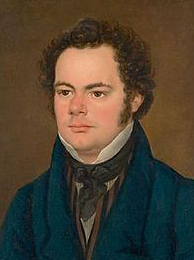

Appreciation of Schubert's music while he was alive was limited to a relatively small circle of admirers in Vienna, but interest in his work increased significantly in the decades following his death. Felix Mendelssohn, Robert Schumann, Franz Liszt, Johannes Brahms and other 19th-century composers discovered and championed his works. Today, Schubert is ranked among the greatest composers of the late Classical and early Romantic eras and is one of the most frequently performed composers of the early 19th century.